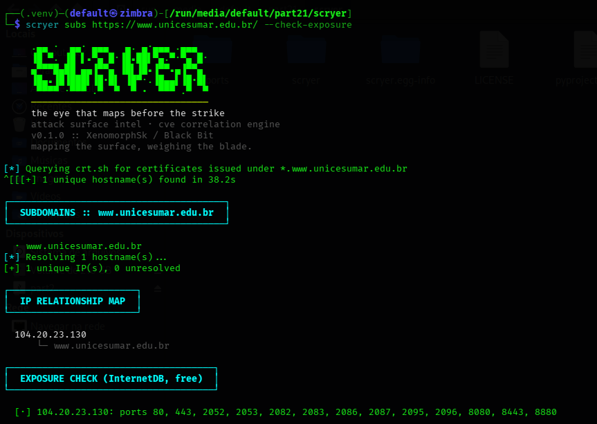

● dimensão // ferramenta de código aberto · Black Bit
SCRYER
"the eye that maps before the strike"
Mapeamento de superfície de ataque e correlação de CVEs sobre a API do Shodan.
Encontra o que uma organização expõe pra internet antes de um atacante encontrar —
e diz exatamente o quão grave é.
Python
Shodan API
NVD / CVSS
CLI
MIT license
[!] recon passivo, não ativo
— nenhum pacote é enviado ao alvo. O SCRYER só lê o que o Shodan já indexou
(dados de scans anteriores da própria Shodan). É reconhecimento, não ataque — mesmo assim,
só rode contra infraestrutura que você possui ou está explicitamente autorizado a avaliar.
Log_0001
Por que existe
Um mapa de superfície sem severidade é só um inventário. Uma lista de CVEs sem contexto de exposição é teoria. Juntando os dois, você responde a única pergunta que importa no início de um engagement:
O SCRYER funde duas coisas normalmente tratadas separadamente: mapeamento de
superfície de ataque — todo host/porta/banner que o Shodan já indexou pra um domínio, IP
ou bloco CIDR — e correlação de CVE, usando a própria tag de vulnerabilidade do Shodan
enriquecida com CVSS e descrições ao vivo da NVD.
"Onde estamos expostos, e o quão grave é isso, agora?"
Log_0002
Em ação
Enumeração de subdomínios via crt.sh (certificate transparency, 100% público), resolução de IP e checagem de exposição — tudo sem tocar no alvo.
scryer subs <domínio> --check-exposure

Exemplo real de execução — enumeração via crt.sh, mapa de relação de IP e checagem de exposição via InternetDB (gratuita, Shodan).
$ scryer full acme.example --json report.json --html report.html
[+] 14 service(s) discovered
[x] 3 host(s) flagged as high-attention
[!] 203.0.113.10:3389 (Microsoft Remote Desktop) vpn.acme.example
└─ RDP exposed to the internet
[!] 203.0.113.11:443 (nginx 1.18.0) app.acme.example
└─ 1 known CVE(s) matched by Shodan
└─ CVEs: CVE-2021-23017
┌───────────────────┐
│ CVE CORRELATION │
└───────────────────┘
[CRITICAL] CVE-2021-23017 (9.8) — nginx resolver off-by-one heap write vulnerability.
Log_0003
Como funciona
target (domain/IP/CIDR)
│
▼
┌─────────────────┐ dados históricos de scan
│ ScryerShodan │ ─── internet-wide do próprio Shodan
└────────┬─────────┘ (sem probing ativo)
│ ExposedService[]
▼
┌─────────────────┐
│ shock rule engine│ sinaliza RDP/VNC/Telnet/DBs sem auth/
└────────┬─────────┘ keywords de banner/CVEs conhecidos
│
▼
┌─────────────────┐ cruza IDs de CVE contra
│ CVECorrelator │ ─── severidade ao vivo da NVD
└────────┬─────────┘
│
▼
┌─────────────────┐
│ ScryerReport │ terminal / JSON / HTML
└─────────────────┘
Log_0004
Roadmap
Modo de monitoramento contínuo (diff de scans ao longo do tempo, alerta em desvio)
Webhook Slack/Telegram pra achados de alta severidade
Integração com pipeline do D.A.N.T.E. (recon do Shodan alimentando módulos de scan ativo)
Perfis de escopo por cliente pra engagements da Black Bit
Log_0005
Instalar e usar
MIT license. Precisa de uma chave de API do Shodan — chave da NVD é opcional, mas aumenta o limite de consultas de CVE.
# clona e instala
git clone https://github.com/XenomorphSk/scryer.git
cd scryer
pip install -e .
# configura as chaves
export SHODAN_API_KEY="your_key_here"
export NVD_API_KEY="optional_but_recommended"
# mapeia a superfície de ataque
scryer recon acme.example
# caça hosts afetados por um CVE específico
scryer cve CVE-2024-3400
# pipeline completo: recon + enriquecimento automático de CVE
scryer full acme.example --json report.json --html report.html
Continuação
Parte do arsenal da Black Bit
SCRYER é o primeiro passo de reconhecimento antes de qualquer engagement — mapear a superfície antes de decidir onde apertar. Contribuições, issues e PRs são bem-vindos.